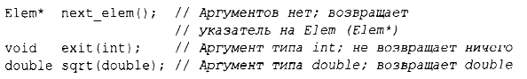
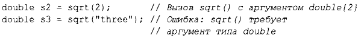
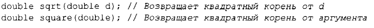
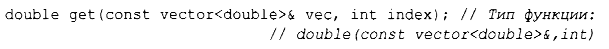
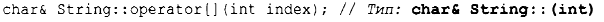
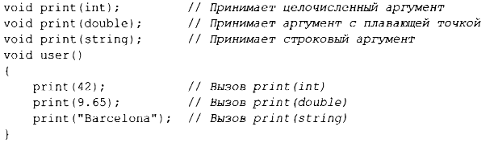
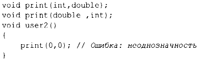

⇐1.2.1. Hello, World! Содержание 1.4. Типы, переменные и арифметика⇒
Основной способ получить что-то в программе на С++ - это вызвать соответствующую функцию. Определение функции - это способ указать, как должны быть выполнены необходимые действия. Функция не может быть вызвана, если она не была объявлена ранее.
Объявление функции дает имя функции, тип возвращаемого значения (если таковое имеется), а также количество и типы аргументов, которые должны быть указаны в вызове. Например:
В объявлении функции возвращаемый тип указывается перед именем функции, а типы аргументов - после имени, заключенными в круглые скобки.
Семантика передачи аргументов идентична семантике инициализации (§3.6.1 ), т.е. выполняется проверка типов аргументов и при необходимости происходит неявное преобразование типов аргументов(§ 1.4). Например:
Значение такой проверки времени компиляции и преобразования типов нельзя недооценивать.
Объявление функции может содержать имена аргументов. Это может помочь читателю программы, но только если объявление не является одновременно определением функции, компилятор просто игнорирует такие имена. Например:
Тип функции включает возвращаемый тип и последовательность типов аргументов. Например:
Функция может быть членом класса (§2.3, §4.2.1 ). Для такой функции-члена имя ее класса также является частью типа функции. Например:
Мы хотим, чтобы наш код был понятным, потому что это первый шаг на пути к его поддерживаемости и сопровождаемости. Первым шагом к облегчению понимания кода является разбиение вычислительных задач на значимые именованные фрагменты (представленные в виде функций и классов). Затем такие функции составляют базовый словарь вычислений, так же как типы (встроенные и определяемые пользователем) составляют базовый словарь данных. Стандартные алгоритмы С++ (например, find, sort или iota) обеспечивают хорошую стартовую позицию (глава 12, "Алгоритмы"). Затем мы можем объединять функции, представляющие распространенные или специализированные задачи, в более крупные вычисления.
Количество ошибок в коде сильно коррелирует с количеством и сложностью кода. Обе проблемы можно решить, используя более короткие функции. Использование функции для выполнения конкретной задачи часто спасает нас от написания определенной части кода в середине другого кода; делая его функцией, мы именуем нашу деятельность и документируем ее зависимости.
Если определены две функции с одним и тем же именем, но с разными типами аргументов, компилятор выберет для каждого вызова наиболее подходящую функцию. Например:
Если могут быть вызваны две альтернативные функции, но ни одна из них не лучше другой, вызов считается неоднозначным и компилятор выдает сообщение об ошибке. Например:
Определение нескольких функций с одним и тем же именем называется перегрузкой функций и является одной из важных частей обобщенного программирования (§7.2). При перегрузке функций каждая функция с одним и тем же именем должна реализовывать одну и ту же семантику. Примером этого являются функции print () - каждая функция print () выводит свой аргумент.